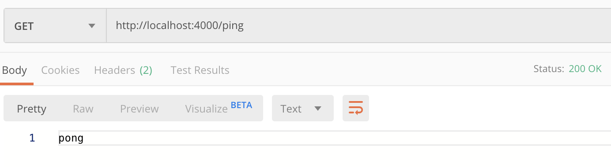
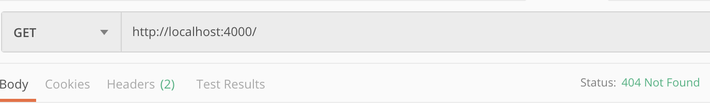
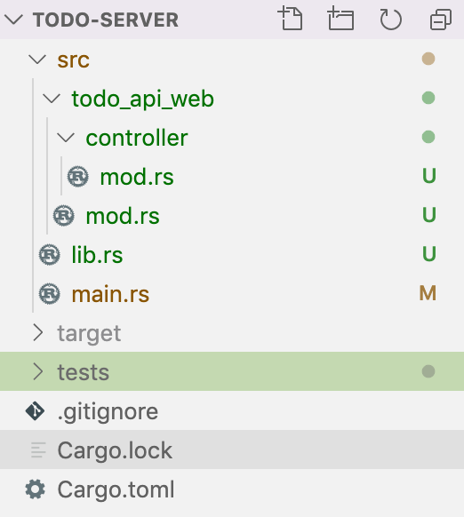

Configurando os primeiros endpoints
O nosso objetivo inicial é fazer nosso servidor responder pong na rota /ping e executar uma função de baixo custo na rota /~/ready retornando 200 ou algum valor de status superior a 400, bastante simples. O objetivo disso é definir em nosso servidor endpoints que respondam se o servidor está disponível e saudável, /ping, assim como responder se esta pronto para executar mais uma operação, /~/ready. Para isso, precisamos criar nosso todo-server com o cargo rodando o comando cargo new todo-server --bin, que irá gerar os arquivos a seguir:
- todo-server/src/main.rs
- todo-server/Cargo.lock
- todo-server/Cargo.toml
O arquivo main.rs é bastante simples, pois possui somente uma linha executando uma impressão no console de "Hello, world!" da seguinte forma:
fn main() { println!("Hello, world!"); }
Já o arquivo Cargo.toml possui todas as informações sobre o binário gerado:
[package]
name = "todo-server"
version = "0.1.0"
authors = ["Julia Naomi @naomijub"]
edition = "2018"
[dependencies]
Já o arquivo Cargo.lock corresponde às configurações geradas para o Cargo.toml com o registro de versões de dependências, assim como o package-lock.json no Node.
Adicionando Actix
Nossa principal dependência é o Actix, assim precisamos adicionar a dependência actix-web = "2.0" à seção [dependencies] do Cargo.toml:
[package]
name = "todo-server"
version = "0.1.0"
authors = ["Julia Naomi @naomijub"]
edition = "2018"
[dependencies]
actix-web = "2.0"
Implementando o endpoint /ping
Este endpoint é comum a muitos serviços, mas em alguns casos é chamado de /healthy, /healthcheck ou /~/healthy, digamos que seja um exemplo com aplicações práticas de um hello world. Neste primeiro momento vamos apresentar primeiro a implementção do /ping e depois explicar, pois acredito que neste caso seja importante ter visão do todo antes de entrar nos detalhes. Assim, uma implementação bem simples de /ping seria:
use actix_web::{web, App, HttpResponse, HttpServer, Responder}; async fn pong() -> impl Responder { HttpResponse::Ok().body("pong") } #[actix_rt::main] async fn main() -> std::io::Result<()> { HttpServer::new(|| { App::new().service( web::scope("/") .route("ping", web::get().to(pong)) .route("", web::get().to(|| HttpResponse::NotFound())), ) }) .workers(6) .bind("127.0.0.1:4000") .unwrap() .run() .await }
E seu funcionamento seria:


Agora podemos começar a descrever o endpoint /ping:
- A primeira coisa que vemos é a diretiva
useassociada a libactix_web. Essa dirtiva nos permite disponibilizar no nosso código as funções e estruturas deactix_webpara uso posterior, assim a diretivause actix_web::HttpServerdisponibilizaria a estruturaHttpServerpara usarmos. - Depois vemos a função
async fn pong() -> impl Responder. Essa função é uma função assíncrona, devido as palavras reservadasasync fn, cujo nome épong, recebe nenhum argumento()e como tipo de resposta implementa a traitResponder, que tem como tipo de retornoFuture<Output = Result<Response, Self::Error>>. A resposta depongé um status codeOk()com umbody("pong"), porém seria possível também implementar com a funçãowith_statusda traitResponder, ficando"pong".with_status(StatusCode::NotFound), que seria classificado como umCustomResponder, ou umRespondercustomizado. - a seguir encontramos a macro
#[actix_rt::main], essa macro exige adicionarmos uma nova dependência aoCargo.toml,actix-rt = "1.0". A função dessa macro é executar qualquer função marcada comoasyncno runtime de actix. - Agora temos a função de execução
maincomoasync fn main() -> std::io::Result<()>. É principalmente aqui que entra a macro#[actix_rt::main], já que ela nos permite utilizar a funçãomaincomoasync. Assim, essa funçãomainé basicamente um código padrão para conformar com a macro. - A linha
HttpServer::new(|| {..})permite criar um servidor HTTP com umaapplication factory, assim como permite configurar a instância do servidor, comoworkersebind, que veremos a seguir. - Assim, a linha
App::new().service(..)é umapplication builderbaseado no padrão builder para oApp, que é uma struct correspondente a aplicação do actix-web, seu objetivo é configurar rotas e settings padrões. A funçãoserviceregistra um serviço no servidor, já a funçãoweb::scope("/")define um escopo comum para as rotas a seguir, e oroutedefine as rotas. - Quanto a rota,
.route("/ping", web::get().to(pong)), primeiro deve se passar uma&strcom a rota a partir do escopo comum, depois um método de chamada HTTP comoGETePOST, representados porweb::get()eweb::post()e uma função de envio do request como.to(pong). - O módulo
webpossui uma série de funções auxiliares e e tipos auxiliares para o actix-web. - Depois disso, vemos
workers(6), uma função deHttpServerque define a quantidade de threads trabalhadoras que estarão envolvidas nesse executável. Por padrão, o valor deworkersé a quantidade de CPUs lógicas disponíveis. - Agora temos o
bind, que recebe o IP e a porta a qual esse servidor se conectará. runeawaitpara executar o serviço e esperar peloasyncdefinido anteriormente.
É importante também implementarmos um teste para NOT_FOUND. Esse teste consiste em um request para uma rota que não existe e um status NOT_FOUND:
#![allow(unused)] fn main() { #[actix_rt::test] async fn not_found_route() { let mut app = test::init_service( App::new().service( web::scope("/") .route("ping", web::get().to(pong)) .route("", web::get().to(|| HttpResponse::NotFound())), ) ).await; let req = test::TestRequest::get() .uri("/crazy-route") .to_request(); let resp = app.call(req).await.unwrap(); assert_eq!(resp.status(), StatusCode::NOT_FOUND); } }
Implementando o endpoint /~/ready
Este endpoint é comum especialmente em serviços kubernetes e sua execução é via kubectl. Usualmente o kubectl espera que o processo ocorra via HTTP, TCP-gRPC ou uma execução de comando no contêiner. Para um contexto simples de contêineres, ter esse endpoint permite um monitoramento mais elevado de serviços, como os Golden Signals (sinais dourados apresentados pelo Google no livro Engenharia de Confiabilidade de Sites). Assim, ele permite um pouco mais de informações além de saber se o servidor está vivo (/ping), já que verifica se o serviço é capaz de realizar um pequeno processo. Outros endpoints comuns para esse tipo de prova são /readiness ou /~/readiness. O nosso endpoint vai executar um simples $ echo hello e retornar accepted para um resultado Ok e internal server error para um resultado Err.
O primeiro passo para essa prova é definir a rota que vamos chamar, no caso /~/ready:
#![allow(unused)] fn main() { App::new().service( web::scope("/") .route("ping", web::get().to(pong)) .route("~/ready", web::get().to(readiness)) .route("", web::get().to(|| HttpResponse::NotFound())), ) }
Note que o endpoint está implementado como rota, mas não como função de Responder, que chamamos de readiness. Para implementarmos esse Responder, podemos usar a seguinte função:
#![allow(unused)] fn main() { async fn readiness() -> impl Responder { let process = std::process::Command::new("sh") .arg("-c") .arg("echo hello") .output(); match process { Ok(_) => HttpResponse::Accepted(), Err(_) => HttpResponse::InternalServerError(), } } }
Note que criamos um valor chamado process que é um comando executado pela crate de OS std::process::Command. Para o readiness o comando que estamos executando é sh -c echo hello, que imprime hello no console. Depois disso fazemos pattern matching do resultado e se for Ok retornamos um 2XX ou retornamos 500 para um Err.
Refatorando
Agora que nosso código está funcionando podemos começar a pensar em organizá-lo, já que nosso arquivo main está com muitas funções. A ideia é seguir o padrão do framework Phoenix do Elixir, assim vamos separar o código em 3 conjuntos:
main.rs, que contém todas as informações de configuração do servidor, ou seja, a própria instância do servidor.todo_api, que contém todos os módulos responsáveis por lógica e banco de dados.todo_api_web, que contém todos os módulos responsáveis pelo gerenciamento do conteúdo web, como views e controllers, no nosso caso somente controllers.
Assim, nossa primeira refatoração seria mover as funcões que implementam a trait Responder para um módulo de controller, src/todo_api/controller/mod.rs:
#![allow(unused)] fn main() { use actix_web::{HttpResponse, Responder}; pub async fn pong() -> impl Responder { HttpResponse::Ok().body("pong") } pub async fn readiness() -> impl Responder { let process = std::process::Command::new("sh") .arg("-c") .arg("echo hello") .output(); match process { Ok(_) => HttpResponse::Accepted(), Err(_) => HttpResponse::InternalServerError(), } } }
Além disso, nosso arquivo main.rs agora consome nosso módulo:
use actix_web::{web, App, HttpResponse, HttpServer}; mod todo_api_web; use todo_api_web::controller::{pong, readiness}; #[actix_rt::main] async fn main() -> std::io::Result<()> { HttpServer::new(|| { App::new().service( web::scope("/") .route("ping", web::get().to(pong)) .route("~/ready", web::get().to(readiness)) .route("", web::get().to(|| HttpResponse::NotFound())), ) }) .workers(6) .bind("127.0.0.1:4000") .unwrap() .run() .await }
Note a presença do módulo todo_api_web declarado como mod todo_api_web; e importando as funções pong e readiness através de use todo_api_web::controller::{pong, readiness};. Além disso, na imagem a seguir podemos perceber a presença de um arquivo lib.rs no sistema de arquivos, esse arquivo serve para podermos exportar nossos módulos internos para testes de integração. Assim, atualmente o único módulo declarado em lib.rs é pub mod todo_api_web;.

#![allow(unused)] fn main() { //src/todo_web_api/mod.rs pub mod controller; }
Outro ponto que creio ser interessante rafatorar é dar a capacidade de nosso servidor adaptar o número de workers a quantidade de cores lógicos que a máquina hospedeira possui. Por exemplo, minha máquina pessoal possui 4 cores lógicos e decidi usar uma estratégia de leve estresse aos cores que geralmente se resume a número de cores lógicos + 2, ela se torna uma opção segura pelo fato de estarmos utilizando async no nosso serviço, ou seja, defini 6 workers, mas se meu computador possuísse 8 cores lógicos, eu poderia estar utilizando 10 workers. Para resolver este problema podemos utilizar uma lib conhecida como num_cpus, basta adicionar ela ao [dependencies] do Cargo.toml num_cpus = "1.0" e substituir em nosso código da seguinte maneira:
async fn main() -> std::io::Result<()> { HttpServer::new(|| { App::new().service( web::scope("/") .route("ping", web::get().to(pong)) .route("~/ready", web::get().to(readiness)) .route("", web::get().to(|| HttpResponse::NotFound())), ) }) .workers(num_cpus::get() + 2) .bind("127.0.0.1:4000") .unwrap() .run() .await }
Testando os endpoints
Uma coisa importante antes de continuarmos é criarmos testes para os endpoints implementados, especialmente agora que já aprendemos como funciona o a criação de rotas e controllers. No caso de rotas e controllers é mais eficiente começar com testes de integração, inclusive por já termos implementado as rotas anteriormente. Assim, precisamos criar alguns arquivos para executar nossos testes de integração. O primeiro arquivo que precisamos é o arquivo lib dentrod e tests, tests/lib.rs:
#![allow(unused)] fn main() { extern crate todo_server; mod todo_api_web; }
Além disso, agora precisamos criar o módulo todo_api_web com um módulo interno controller:
#![allow(unused)] fn main() { // tests/todo_api_web/mod.rs mod controller; }
Agora podemos começar a criar os testes de controller no arquivo tests/todo_api_web/controller.rs. O primeiro teste que vamos escrever é a verificação se o conteúdo de texto da rota /ping é pong. Para isso, precisamos utilizar um módulo de suporte para testes do actix chamado actix_web::test e incorporar como [dev-dependencies] duas libs que nos apoiarão no uso de testes, a bytes = "0.5.3" para processar os bytes da resposta gerada no endpoint, e a actix-service = "1.0.5", que apoia nos testes para chamar um mock de App do actix na rota desejada. Sugiro isolar os testes dos controllers pong e readiness em um módulo conforme a seguir:
#![allow(unused)] fn main() { mod ping_readiness { use todo_server::todo_api_web::controller::{pong, readiness}; use bytes::Bytes; use actix_web::{ test, web, App, }; #[actix_rt::test] async fn test_ping_pong() { let mut app = test::init_service( App::new().service( web::resource("/ping") .route(web::get().to(pong)) ) ).await; let req = test::TestRequest::get() .uri("/ping") .to_request(); let resp = test::read_response(&mut app, req).await; assert_eq!(resp, Bytes::from_static(b"pong")); } } }
O teste apresentado possui uma macro de teste diferente do usual no Rust. Em vez de ser #[test], utilizamos uma macro de teste que disponibiliza o runtime de actix com #[actix_rt::test]. Além disso, note que agora nossa função de teste passa a ser async e utilizamos vários await dentro do teste.
Agora vamos explicar as partes do teste: test::init_service disponibiliza um mock de serviço do Actix que recebe como argumento um tipo App com a rota, web::resource("/ping"), e designa a essa rota um controller, .route(web::get().to(pong)). Além disso, criamos uma instância de Request para teste com test::TestRequest utilizando o método get() na uri("/ping"). Depois disso, a resp corresponde a ler a resposta que esse serviço app daria para o Request req. Como a resposta de read_response são bytes, precisamos da biblioteca byte para converter o array de u8, b"pong", em bytes e fazer a comparação de igualdade.
Com o teste de pong implementado, podemos criar o teste de readiness. No teste de readiness não nos interessa saber o corpo da resposta, assim a sugestão é somente saber se a execução retornou um status Accepted. Para esse teste, vamos utilizar o recurso da crate actix-service, que nos possibilita fazer chamadas a um serviço através de <App>.call(<Request>).await. Assim podemos utilizar o call para retornar uma response, na qual podemos acessar o status(). O bloco de testes fica assim:
#![allow(unused)] fn main() { mod ping_readiness { use todo_server::todo_api_web::controller::{pong, readiness}; use bytes::Bytes; use actix_web::{ test, web, App, http::StatusCode, }; use actix_service::Service; #[actix_rt::test] async fn test_ping_pong() { // ... } #[actix_rt::test] async fn test_readiness_ok() { let mut app = test::init_service( App::new() .service(web::resource("/readiness").to(readiness)) ).await; let req = test::TestRequest::with_uri("/readiness").to_request(); let resp = app.call(req).await.unwrap(); assert_eq!(resp.status(), StatusCode::ACCEPTED); } } }
Com tudo testado, o próximo passo é configurar nosso serviço para criar uma tarefa todo.
- O código deste capítulo está na bibliografia e solicitações de mudança serão bem vindas para manter o código exemplo atualizado.